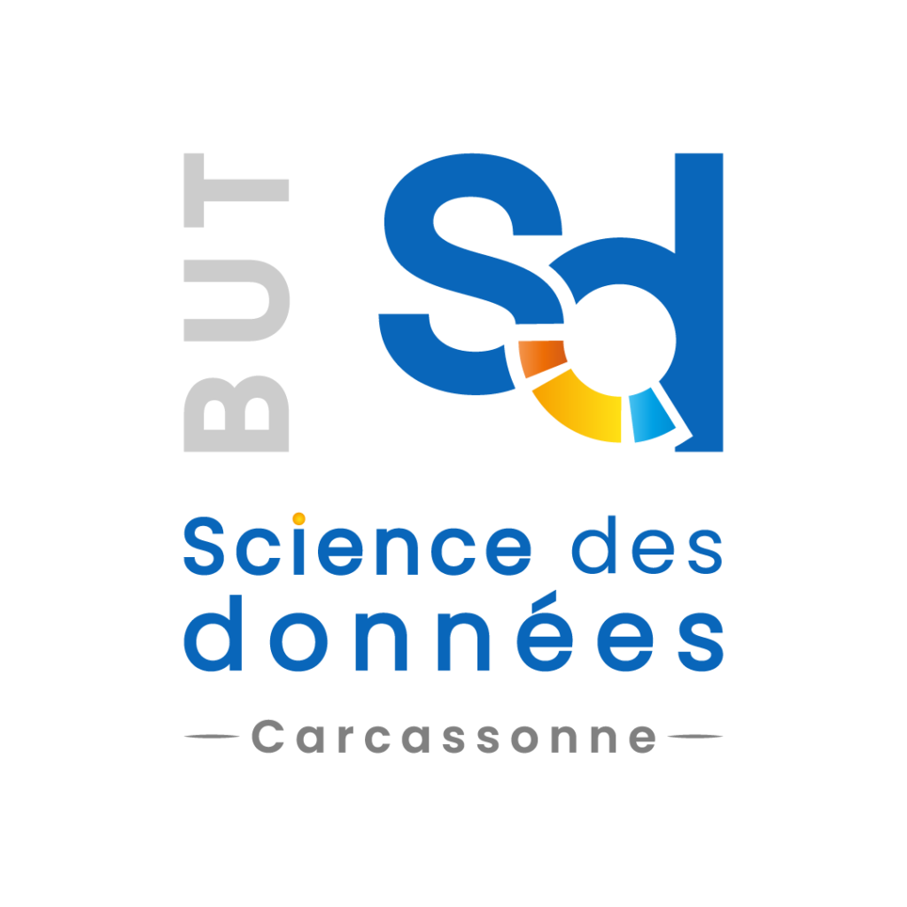

Ma Formation
BUT Science des Données
IUT des Pays de l'Adour - Campus de Pau
Cette formation de trois ans combine statistiques, informatique décisionnelle et gestion.
📍 Pau
🎓 Niveau Bac+3
Université de Pau (UPPA)
L'UPPA est une université d'excellence, lauréate du label I-SITE.